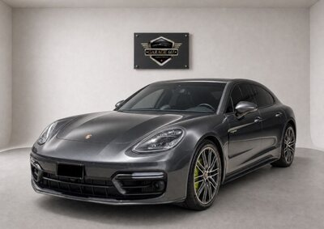
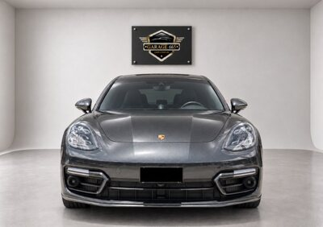
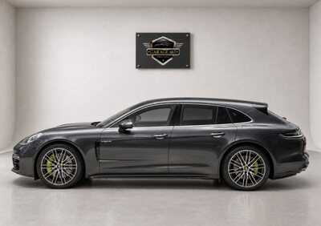
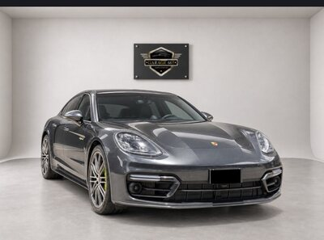
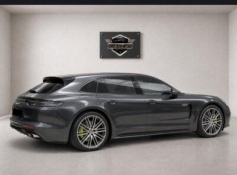
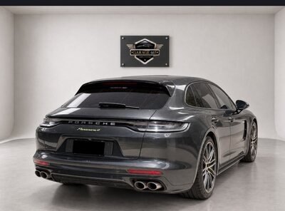
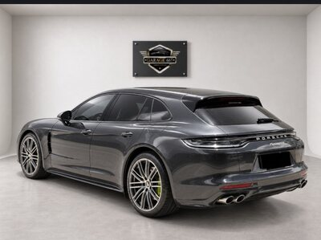
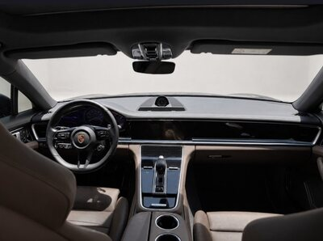
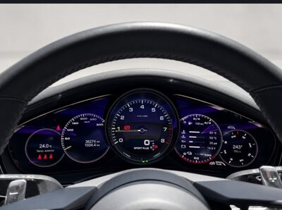
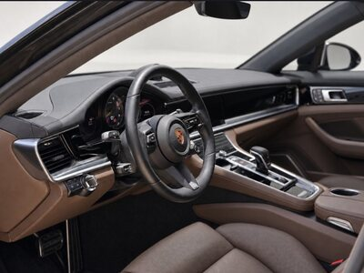

Eixo
O seu negócio. É de onde vem a força.
Posicionamento e performance para negócios que querem crescer no digital.
Role para revelar
Sua marca não precisa de mais anúncio. Precisa do trabalho que vem antes.
O espelho
Você sobe campanha, o clique vem, o cliente não. O problema quase nunca está no criativo.
Troca o criativo, troca a oferta, troca o direcionamento. É onde a mão alcança, e é o que todo mundo faz quando o resultado não vem.
Porque cada raio puxa para um lado, e nenhum deles sustenta os outros. Mexer em raio solto não estabiliza roda nenhuma.
Ninguém construiu a peça que segura tudo. Sem ela a roda gira, gasta verba, e não sai do lugar.
O centro tem nome
O cubo da roda. A peça do meio, onde os raios se prendem e por onde passa a força do eixo. Sem ela, a roda não é roda.
É de onde vem Moza.
A anatomia
O seu negócio. É de onde vem a força.
O posicionamento, que a gente constrói primeiro.
Os canais por onde a marca cresce.
O mercado, onde a marca toca o chão.
A gente não entrega o plano e some. Opera junto.
O método
O Diagnóstico é o centro: é onde a gente mede onde a sua marca está antes de qualquer investimento. As outras quatro são os raios que se prendem nele.
Centro
Onde a sua marca está hoje, medido antes de qualquer investimento.
Raio 1
Como a sua marca aparece quando alguém pesquisa antes de comprar.
Raio 2
Como chega gente nova todo dia, com conteúdo e alcance.
Raio 3
Como interesse vira cliente, com estrutura e oferta certas.
Raio 4
Como o resultado se sustenta, lido e ajustado todo mês.
Até onde a gente entra
Tem cliente que quer o caminho desenhado e executa com a estrutura dele. Tem cliente que quer a execução inteira fora da mesa dele.
No segundo caso o nome é Moza 360.
A gente estuda o segmento, mapeia os concorrentes, define quem é o cliente que vale a pena atrair e como falar com ele, e escreve o posicionamento. Até aqui é o método. Depois a gente põe a mão na massa. Roteiro, captação, produção, edição e publicação, no Instagram, no Facebook, no TikTok e no LinkedIn. O tráfego pago corre junto, na mesma mesa de quem escreveu o posicionamento.
A Estratégia entrega o caminho.
O 360 anda o caminho com você.
Qual dos dois serve para o seu negócio sai do diagnóstico, não daqui.
O acervo
Escolha um tópico e veja o trabalho que saiu dele. Cliente real, com nome, em todos.
Porsche Panamera Sport Turismo, para a Garage 665. Dez vistas no mesmo padrão de estúdio, sete externas e três internas, entregues prontas para publicar.










Vitrine

Duarte Reis Advogados
Sociedade de advogados na Mooca, São Paulo.
Vitrine

Bruno Rocha
Psicólogo. A autoridade na frente, não escondida.
Vitrine

Plan10 Consórcios
Consórcio, onde confiança decide a venda.
Vitrine

Disk Água Araújo
Distribuidora. Pedido em um toque.
Produção

Captação aérea no pátio
Drone da casa, estoque do cliente.
Produção

Dentro da loja
Quem opera a conta senta no pátio do cliente.
Tráfego

Via Brasil Automóveis
Vinte carros por mês pela internet, desde julho de 2026.
A prova
A Via Brasil Automóveis, em Ribeirão Pires, é a maior loja de seminovos da cidade. A operação com a Moza roda desde julho de 2026.
O ponto de partida
Campanhas, públicos e pixel apagados. A loja continuou anunciando, mas ficou sem saber de onde vinha lead nenhum.
O que foi feito
Contêiner de tags, pixel, analytics e conversão religados do zero. A origem de cada lead passou a ser registrada no CRM da própria loja.
O que roda hoje
Quem opera a conta senta dentro da loja. Captação, edição e publicação saem de lá, com o estoque real na frente.
Quem somos
A casa nasceu em 2026 em Santo André, São Paulo, e atende o Brasil inteiro de forma remota.
Comercial
Quem te atende do diagnóstico ao fechamento.
Operacional
Quem constrói posicionamento, conteúdo e performance.
Perguntas
Fazemos, e é justamente por isso que começamos pelo posicionamento. Anúncio sem base vira custo.
Cada negócio recebe um desenho próprio depois do diagnóstico. Sem tabela genérica, porque o problema nunca é genérico.
O prazo é definido no diagnóstico, junto com você. Desconfie de quem promete prazo sem conhecer o seu negócio.
Atendemos negócios de vários segmentos, de autônomos a startups. O que importa é o encaixe com o método.
O método define isso com você. Existe caminho para quem aparece e para quem não aparece.
Os dois caminhos existem. Tem cliente que executa com a estrutura dele e tem cliente que prefere a produção inteira com a gente. Qual serve para você sai do diagnóstico.
Uma conversa no WhatsApp, depois um diagnóstico do seu negócio. Você entende exatamente onde está antes de decidir qualquer coisa.
O próximo passo
Negócio sério, visto como sério. É isso que a gente busca com o nome e com a narrativa. Começa por uma conversa, depois um diagnóstico.
Fale com a Moza